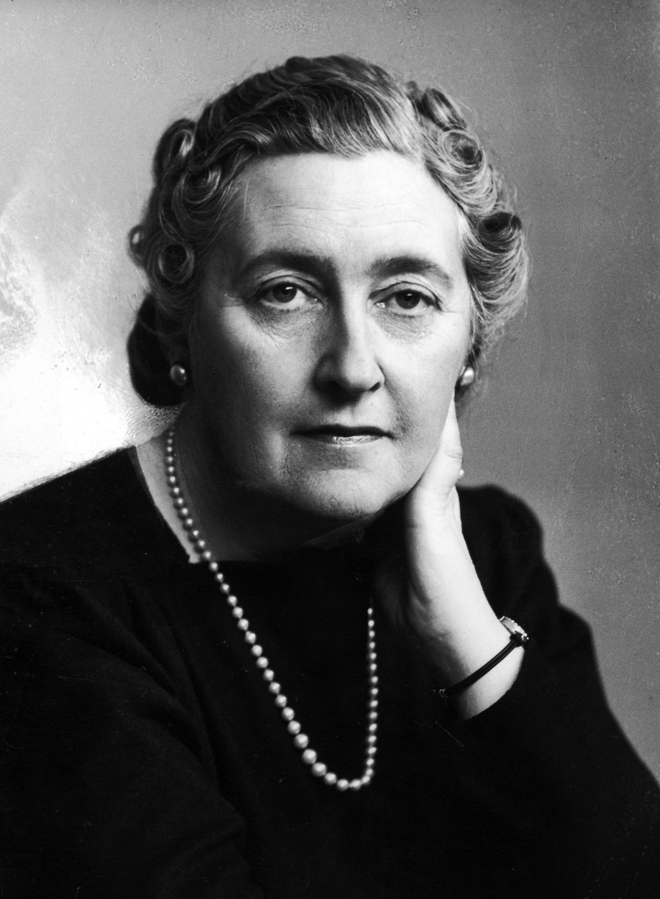
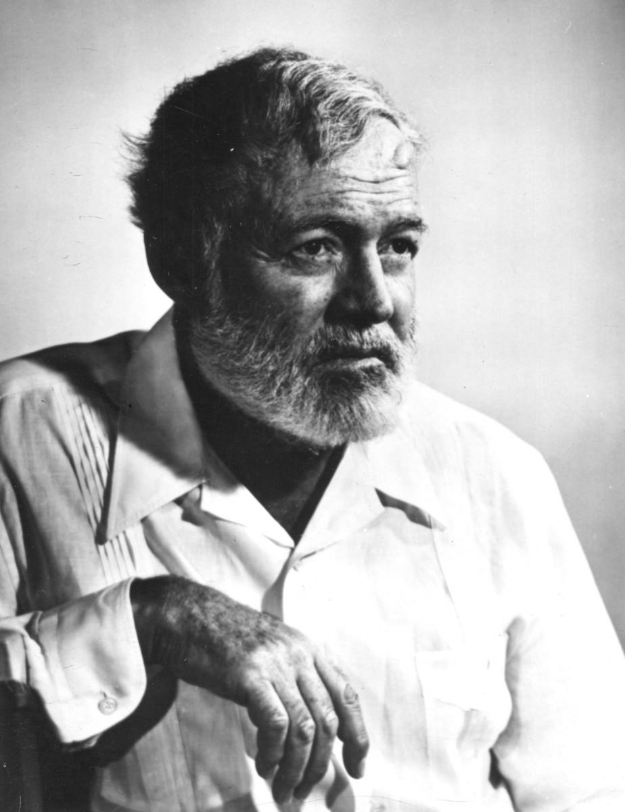

The Authors Among Us
Behind every great book is a mind that dared to dream and a hand that dared to write. Our authors are more than just storytellers; they are researchers, observers, and creators who transform ideas into lasting words. On this page, you can meet the people whose passion and dedication bring our library to life
Writers, artists, creators!
These are one of the most famous authors you've ever heard:
 |
 |  |  |
| William Shakespeare | Agatha Christie | Ernest Hemingway | J.K. Rowling |
|---|---|---|---|
| William Shakespeare was a master of capturing the human soul. Writing during the Renaissance, he crafted timeless tragedies and comedies that explored themes of power, love, and betrayal. His influence is so vast that he credited with inventing over 1,700 words, forever shaping the way we speak and write today. | The undisputed 'Queen of Crime,' Agatha Christie remains the best-selling novelist in history. With a brilliant mind for puzzles, she created iconic characters like Hercule Poirot and Miss Marple, redefining the detective genre. | A Nobel Prize winner and a giant of 20th-century literature, Ernest Hemingway was famous for his 'Iceberg Theory' of writing. His style was characterized by extreme minimalism and emotional depth hidden beneath simple, direct sentences. | J.K. Rowling is the visionary author who brought magic back to the modern world through the Harry Potter series. By creating a rich, immersive universe filled with complex characters and moral depth, she transformed a generation of children into lifelong readers and changed the landscape of fantasy literature forever. |
These writers prove that words are more powerful than time. Though they lived in different eras and wrote in different genres, they all shared a common goal: to capture the essence of the human experience. Their stories act as a bridge between the past and the future, reminding us that while technology and societies change, the core of human emotion remains the same.